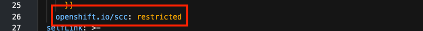
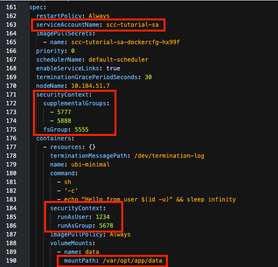
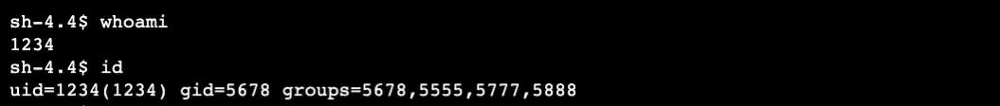

Tutorial: Use SCCs to restrict and empower OpenShift workloads
This hands-on tutorial is for developers and cluster administrators who are interested in learning how to deploy workloads on a Red Hat OpenShift cluster that need access to protected Linux functions. It shows you how to specify secure contexts (SCs) in the deployment manifest to configure the container with the access the application needs. It also teaches how to configure security context constraints (SCCs) to grant that access to the deployment.
By default, a container blocks its process from invoking protected functions. The security context (SC) must explicitly request access to perform functions such as:
* Run the process as a specific user or group
* Make the process a member of additional groups
* Run a privileged container
* Execute protected commands such as the KILL command
The deployment can request this access, but an SCC must approve it. This tutorial shows how to configure a custom SCC with the smallest set of permissions necessary to perform its work, and how to associate a deployment with this custom SCC. This best practice helps to protect your cluster from both intentional and accidental harm while providing a way to request and grant additional permissions when necessary.
Learning objectives¶
In this tutorial, you will create a simple deployment. Deployments bring up pods as requested in a spec. This tutorial uses a simple pod that mounts an ephemeral volume and runs a single container. You can use a remote shell to run commands on the container to examine its runtime environment and permissions.
You will learn how to:
- Check the pod YAML to see what SC is configured and what SCC was assigned
- Test access permissions using a default service account and a default SC
- Find an error event that shows an SCC validation error
- Create an SCC and assign it to a service account
- Use an SC that requests special permissions with an SCC that allows them
Security context constraints concepts¶
Before attempting this hands-on tutorial, you should understand how SCCs are used. The article "Overview of security context constraints" explains these overall concepts, which are summarized as follows.
An application's access to protected functions is an agreement between three personas:
- A developer who writes an application that accesses protected functions
- A deployer who writes the deployment manifest that must request the access the application requires
- An administrator who decides whether to grant the deployment the access it requests
This diagram illustrates the components and process that allow an application to access resources:

- A developer writes an application that needs access to protected functions
- A deployer creates a deployment manifest to deploy the application with a pod spec that configures:
- A security context (SC) (for the pod and/or for each container) that requests the access needed by the application, thereby requesting it
- A service account to grant the requested access
- An administrator assigns a security context constraint (SCC) to the service account that grants the requested access. The SCC can be assigned directly to the service account or indirectly via an RBAC role or group.
- The SCC may be one of OpenShift's predefined SCCs or it may be a custom SCC.
- If the SCC grants the access, the admission process allows the pod to deploy and the pod configures the container as specified.
Note: An OpenShift service account is a special type of user account that is used programmatically without using a regular user’s credentials.
Prerequisites¶
- Access to an OpenShift cluster
- Cluster admin permissions
- The OpenShift CLI (
oc) - A bash or zsh terminal (or similar)
- An OpenShift project to work in
Optional: You'll need to copy and paste some code, either from this document or from the GitHub repo. You can either view the repo in a browser and copy the code from there, or you can clone the repo to create a local copy of the code.
Note: This tutorial demonstrates how SCCs can manage file access permissions and ownership settings using Linux features like user, group, file system group, and supplemental groups. For a refresher on these features, check out "Learn Linux, 101: Manage file permissions and ownership."
Estimated time¶
It should take you about 1 hour to complete this tutorial.
Steps¶
- Create a default deployment
- Simulate an application using a base image
- Examine the default SC and SCC
- Test your container's runtime permissions
- Attempt a deployment with SCs
- Request special permissions for your deployment
- See how a deployment fails when requesting privileges that are not assigned
- Create and assign an SCC
- Create an SCC to allow your deployment's SCs
- Create a role that uses the SCC
- Bind the role to a service account
- Create a deployment using the service account that uses the SCC
- Validate the deployment with an SCC
- Examine the resulting SCs and selected SCC
- Test your container's new runtime permissions
Personas¶
Steps 1, 2, and 4 are performed by a user with permission to create deployments (the deployer). The deployer is responsible for specifying SCs to request the permissions required by the pod and the container. The deployer can also select the service account that is used to validate the requested permissions.
Step 3 is performed by a cluster admin. Creating and assigning SCCs can be done to restrict permissions, but it can also relax permissions and create vulnerabilities. Because of this, the cluster admin must determine which SCCs should be allowed in the cluster and when to assign them to project service accounts.
WARNING: Once privileges are given to an SCC and the SCC is granted to a project service account (for example, via a role binding), any deployer in the project can take advantage of those privileges.
Step 1: Create a default deployment¶
This first step shows you how to:
- Simulate an application using a base image
- Examine the default SCs and SCC
- Test your container's runtime permissions
You will see:
- The SCC that was assigned by default
- The default SCs added for your pod and container
- The user ID assigned to run the container
- The user's group memberships
- How the user ID and group memberships affect data access
Simulate an application using a base image¶
You will experiment with permissions using a simple container to simulate an application writing to the file system. Instead of an application with a GUI, you'll run a container that is nothing more than a base image and use a shell in that container. Instead of a file system, you'll mount an emptyDir volume within the container. With this, you can run Linux commands on the ephemeral mounted volume to test the privileges and access controls.
-
Start in a terminal:
- Log in with your credentials.
- Switch to the project.
bash oc login <your-credentials> oc project <your-project> -
Download the deployment manifest YAML file from this GitHub repo, or copy/paste and save it to a file named
deploy_default.yaml.yaml apiVersion: apps/v1 kind: Deployment metadata: name: scc-tutorial-deploy-default spec: selector: matchLabels: app: scc-tutorial-default template: metadata: labels: app: scc-tutorial-default spec: containers: - image: ubi8/ubi-minimal name: ubi-minimal command: ['sh', '-c', 'echo "Hello from user $(id -u)" && sleep infinity'] volumeMounts: - mountPath: /var/opt/app/data name: data serviceAccountName: default volumes: - emptyDir: {} name: data -
Run the following command to create the deployment:
bash oc create -f deploy_default.yaml
Examine the default SCs and SCC¶
You can get the full YAML description of the pod to see the details. For this tutorial, the interesting part is the annotation that shows which SCC was used, the container's SC, and the pod's SC. In this example, our manifest explicitly specifies the default service account for completeness, a setting that's usually left implied.
You can use the OpenShift Web Console or use the oc command-line interface in your terminal to see the results.
Using the command-line interface¶
- To get the details for the pod, use
oc getwith the labelapp=scc-tutorial-defaultand theyamloutput option:
bash
oc get pod -l app=scc-tutorial-default -o yaml
- The following code listing highlights the interesting parts. We explain them more in the next section:
yaml
...
metadata:
annotations:
...
openshift.io/scc: restricted
...
spec:
containers:
...
securityContext:
capabilities:
drop:
- KILL
- MKNOD
- SETGID
- SETUID
runAsUser: 1000620000
...
securityContext:
fsGroup: 1000620000
seLinuxOptions:
level: s0:c25,c10
serviceAccount: default
serviceAccountName: default
...
Using the OpenShift Web Console¶
-
Check the status of your deployment:
- Use the sidebar pull-down menu to select Administrator.
- Expand Workloads.
- Select Deployments.
- Status should say "1 of 1 pods."

-
Check the details of your pod:
- Click the deployment status "1 of 1 pods" link.
- Click the pod name
scc-tutorial-deploy-default-<generated-suffix>. - Select the YAML tab.

What did you find?¶
-
The pod YAML shows the SCC that was assigned.
-
The SCC is shown in
annotations. - The default deployment got the
restrictedSCC. This was the highest priority and most restrictive SCC available to the service account.

-
Scroll down to see the service account, pod SC, and container SC.
-
serviceAccountNameisdefault. You will change this later. securityContextfor the pod was givenseLinuxOptionsand anfsGroupsetting. These came from the project defaults.securityContextfor the container was given some specificcapabilitiestodropand arunAsUser. These are also from the project defaults. Notice that the container'srunAsUseris the same as the pod'sfsGroup.

Test your container's runtime permissions¶
Let's see how these settings affect your container's runtime permissions.
1. Use the OpenShift Web Console or use the oc command-line interface in your terminal to see the results.
Using the command-line interface**¶
- Get the pod name:
bash
oc get pod -l app=scc-tutorial-default
- Remote shell into the pod's container:
bash
oc rsh <pod-name>
Using the OpenShift Web Console**¶
-
Select the
Terminaltab on the pod details page:
2. Check the user ID and group memberships:
| Command | Description |
|---|---|
| whoami | Show your user ID |
| id | Show your user ID (uid), group ID (gid), and group memberships |
What does this show?
- With the restricted SCC, you got the user ID and group IDs from the project defaults. Remember, you did not specify any user ID or group ID in your deployment manifest.
- The user ID is the one that you saw assigned in the container
securityContext.runAsUser. - This user ID is assigned to the root group (ID 0) as its default group ID.
- The user is also a member of the file system group. In this case, the file system group is the same as the user ID. This is assigned in the pod
securityContext.fsGroup.
3. Let's see how the file system group was used for your volume:
| Command | Description |
|---|---|
| ls -ld / /tmp /var/opt/app/data | Show permissions on the root directory, the temp directory, and the mounted volume |
What does this show?
- The volume was mounted at
/var/opt/app/dataas specified in the manifest. - The volume directory's group ID is the fsGroup ID, and "set-group-ID" mode is set (i.e. the sticky bit forces files created in this directory to be owned by this group ID).
- For comparison, the root and temp directories do not use the fsGroup ID. The temporary directory is writable for every user. The root directory is only writable for the root user.
4. See what happens when you write a file:
| Command | Description |
|---|---|
echo hello > /var/opt/app/data/volume.txt |
Write to a file on the volume |
echo hello > /tmp/temp.txt |
Write to a file in the temp directory |
echo hello > /fail.txt |
Try to write a file in the root directory |
ls -l /tmp/temp.txt /var/opt/app/data/volume.txt |
Check the permissions on our files |

What does this show?
- The file that you wrote on the volume is owned by your user ID and file system group ID (because of the sticky bit). This is really significant. In the next step, you choose the group that you want to share files with (instead of this default ID).
- The file that you wrote in the temporary directory is owned by your user ID and your default group ID (root). You use this local file behavior to highlight the effect of the file system group on your mounted volume.
- You don't have write permission in the root directory. This emphasizes that you are not running as root or as a privileged user.
Now that you know how to avoid running as root, it's time to choose your user or group IDs.
Step 2: Attempt a deployment with SCs¶
This step shows a scenario where you are deploying an application that needs a specific user ID and also requires a shared group ID for data access. This example covers the use cases mentioned earlier.
First, use SCs in your deployment manifest to specify the expected user ID and group IDs for your pod and container.
These SCs are validated against SCCs that are assigned to the service account. If there is not an SCC that can validate the SCs, then the pod will not start.
Request special permissions for your deployment¶
We added SCs for the pod and the container to request the following settings for access control:
- Run as user ID 1234.
- Run as group ID 5678.
- Add supplemental group IDs 5777 and 5888.
-
Use a file system group ID of 5555.
-
Download the deployment manifest YAML file from this GitHub repo or copy/paste and save it to a file named
deploy_sc.yaml.yaml apiVersion: apps/v1 kind: Deployment metadata: name: scc-tutorial-deploy-sc spec: selector: matchLabels: app: scc-tutorial-sc template: metadata: labels: app: scc-tutorial-sc spec: containers: - image: ubi8/ubi-minimal name: ubi-minimal command: ['sh', '-c', 'echo "Hello from user $(id -u)" && sleep infinity'] securityContext: runAsUser: 1234 runAsGroup: 5678 volumeMounts: - mountPath: /var/opt/app/data name: data serviceAccountName: default securityContext: fsGroup: 5555 supplementalGroups: [5777, 5888] volumes: - emptyDir: {} name: data -
Run the following
oc createcommand to create the deployment.bash oc create -f deploy_sc.yaml
See how a deployment fails when requesting privileges that are not assigned¶
-
Check for SCC errors.
When a deployment fails due to SCC, you need to check the status of the replica set. Describe the deployment to check replica status:
bash oc describe deployment/scc-tutorial-deploy-scThe output should show a
ReplicaFailure:bash $ oc describe deployment/scc-tutorial-deploy-sc ... Replicas: 1 desired | 0 updated | 0 total | 0 available | 1 unavailable ... Conditions: Type Status Reason ---- ------ ------ Progressing True NewReplicaSetCreated Available False MinimumReplicasUnavailable ReplicaFailure True FailedCreate OldReplicaSets: <none> NewReplicaSet: scc-tutorial-deploy-sc-5c4f64575c (0/1 replicas created) ...To get a more specific reason for the replica set failure, use
oc get events:bash $ oc get events | grep replicaset/scc-tutorial-deploy-sc 2m37s Warning FailedCreate replicaset/scc-tutorial-deploy-sc-5c4f64575c Error creating: pods "scc-tutorial-deploy-sc-5c4f64575c-" is forbidden: unable to validate against any security context constraint: [fsGroup: Invalid value: []int64{5555}: 5555 is not an allowed group spec.containers[0].securityContext.securityContext.runAsUser: Invalid value: 1234: must be in the ranges: [1000620000, 1000629999]]The
FailedCreatewarning clearly shows that you have been unable to validate against any security context constraints due to thefsGroupandrunAsUservalues.This error is expected because the deployment manifest has asked for specific permissions, and the default service account cannot use any SCC that allows these permissions. This tells you that either the deployer has requested too much access in the manifest or the cluster admin needs to provide an SCC that allows more access.
It might look like the deployment hasn't deployed, but that's not the problem. A deployment named
scc-tutorial-deploy-schas been created. You can use eitheroc get deploymentor the OpenShift Web Console to look for it. A replica set namedscc-tutorial-deploy-sc-<generated-suffix>has also been created -- but both show 0-of-1 pods have been created, and the replica set has an event that explains the problem.So, instead of deploying an application that will eventually run into data access errors, you make it fail earlier with error messages that explain why. Failing early is definitely a good thing. By clearly indicating the special permissions needed by this application, the developer, the deployer, and the security administrator are better able to communicate the special security requirements of this deployment.
Step 3: Create and assign an SCC¶
Note: You must be a cluster admin for this step.
Now you will use SCCs along with role-based access controls (RBAC) to provide your workloads with the privileges they need to perform their work.
-
Download the YAML file from this GitHub repo or copy/paste and save it to a file named
scc-tutorial-scc.yaml:yaml kind: SecurityContextConstraints apiVersion: v1 metadata: name: scc-tutorial-scc allowPrivilegedContainer: false runAsUser: type: MustRunAsRange uidRangeMin: 1000 uidRangeMax: 2000 seLinuxContext: type: RunAsAny fsGroup: type: MustRunAs ranges: - min: 5000 max: 6000 supplementalGroups: type: MustRunAs ranges: - min: 5000 max: 6000 -
Run the following command to create the SCCs:
bash oc create -f scc-tutorial-scc.yaml -
Create a new service account:
Run the following command to create a service account -- you don't want to modify the default one for this:
bash oc create sa scc-tutorial-sa -
Download the YAML file from this GitHub repo or copy/paste and save it to a file named
rbac.yaml:```yaml¶
kind: Role apiVersion: rbac.authorization.k8s.io/v1 metadata: name: use-scc-tutorial-scc rules: - apiGroups: ["security.openshift.io"] resources: ["securitycontextconstraints"] resourceNames: ["scc-tutorial-scc"] verbs: ["use"]
kind: RoleBinding apiVersion: rbac.authorization.k8s.io/v1 metadata: name: use-scc-tutorial-scc subjects: - kind: ServiceAccount name: scc-tutorial-sa roleRef: kind: Role name: use-scc-tutorial-scc apiGroup: rbac.authorization.k8s.io ```
-
Run the following command to create the role and bind it to your service account:
bash oc create -f rbac.yaml
Review what you've done¶
As a cluster-admin:
- You created an SCC called
scc-tutorial-scc. - You created a service account called
scc-tutorial-sa. - You created a role and a role binding, both named
use-scc-tutorial-scc.
As part of creating the role and role binding, you associated the SCC with the role and bound it to the service account. This associates the service account with the SCC such that any pod running as the service account has access to the SCC.
In the next step, as a deployer, you will use this service account to fix the deployment that failed to validate your SCs in the previous step.
Step 4: Create a deployment using the service account that can use the SCC¶
Now you can validate the deployment with an SCC.
For the third try, change the service account name to use your new service account.
-
Download the YAML file from this GitHub repo or copy/paste and save it to a file named
deploy_sc_sa.yaml.yaml apiVersion: apps/v1 kind: Deployment metadata: name: scc-tutorial-deploy-sc-sa spec: selector: matchLabels: app: scc-tutorial-sc-sa template: metadata: labels: app: scc-tutorial-sc-sa spec: containers: - image: ubi8/ubi-minimal name: ubi-minimal command: ['sh', '-c', 'echo "Hello from user $(id -u)" && sleep infinity'] securityContext: runAsUser: 1234 runAsGroup: 5678 volumeMounts: - mountPath: /var/opt/app/data name: data serviceAccountName: scc-tutorial-sa securityContext: fsGroup: 5555 supplementalGroups: [5777, 5888] volumes: - emptyDir: {} name: data -
Run the following command to create the deployment.
bash oc create -f deploy_sc_sa.yaml
Examine after adding custom SCs and SCC¶
Now that you've customized the SCs and created a custom SCC to validate it, let's look at the results.
Get the full YAML description of the pod to see the details. For this tutorial, the interesting part is the annotation that shows what SCC was used, the container securityContext, and the pod securityContext. You also want to check that you used your scc-tutorial-sa service account.
Use the OpenShift Web Console or use the oc command-line interface in your terminal to see the results.
Using the command-line interface¶
-
To get the details for the pod, use
oc getwith the labelapp=scc-tutorial-sc-saand theyamloutput option:bash oc get pod -l app=scc-tutorial-sc-sa -o yaml -
The following code listing highlights the interesting parts (we explain them more in the next section):
yaml ... metadata: annotations: ... openshift.io/scc: scc-tutorial-scc ... spec: containers: ... securityContext: runAsGroup: 5678 runAsUser: 1234 ... volumeMounts: - mountPath: /var/opt/app/data ... securityContext: fsGroup: 5555 supplementalGroups: - 5777 - 5888 serviceAccount: scc-tutorial-sa serviceAccountName: scc-tutorial-sa ...Using the OpenShift Web Console¶
-
Check the status of your deployment:
- Use the sidebar pull-down menu to select Administrator.
- Expand Workloads.
- Select Deployments.
- Find
scc-tutorial-deploy-sc-sa. - Status should say "1 of 1 pods."

-
Check the details of your pod:
- Click on the deployment status 1 of 1 pods link.
- Click on the pod name
scc-tutorial-deploy-sc-sa-<generated-suffix>. - Select the YAML tab.
What did you find?¶
-
The pod YAML shows the SCC that was assigned.
-
The SCC is shown in
annotations. - This deployment used the new
scc-tutorial-sccSCC. This was the highest priority, most restrictive SCC that was able to validate your SCs (and was available to your service account).

-
Scroll down to see the pod spec. Instead of defaults, you'll see that the manifest has determined the SCs:
-
SecurityContextfor the pod was givenfsGroup: 5555andsupplementalGroups: [5777, 5888]. SecurityContextfor the container was givenrunAsUser: 1234andrunAsGroup: 5678.- The volume was mounted at
/var/opt/app/data. ServiceAccountNameisscc-tutorial-sa(the service account you just created and assigned your one SCC).

Test your container's runtime permissions¶
1. Use the OpenShift Web Console or the oc command-line interface in your terminal to see the results.
Using the OpenShift Web Console**¶
- Select the Terminal tab on the pod details page.
Using the command-line interface**¶
-
Get the pod name:
bash oc get pod -l app=scc-tutorial-sc-sa -
Remote shell into the pod's container:
bash oc rsh <pod-name>
2. Check the user ID and group memberships
| Command | Description |
|---|---|
whoami |
Show your user ID |
id |
Show your user ID (uid), group ID (gid), and group memberships |

What does this show?
- You are using the user ID (
uid) or group ID (gid) from your deployment manifest. - The supplemental groups that you requested have also been created, and your user is a member of those groups.
- The user is also a member of the file system group. This ID is specified in the pod
securityContext.fsGroup.
3. To see how the file system group was used for your volume, use this command:
| Command | Description |
|---|---|
ls -ld / /tmp /var/opt/app/data |
Show permissions on the root directory, the temp directory, and the mounted volume |

What does this show?
- The volume is mounted at
/var/opt/app/data(as specified in the manifest). - The volume directory's group ID is the
fsGroupthat you requested in your manifest. - The "set-group-ID" mode is set (i.e. the sticky bit forces files created in this directory to be owned by this group ID).
- The
rootandtempdirectories have not changed from our default example.
4. See what happens when you write a file.
| Command | Description |
|---|---|
echo hello > /var/opt/app/data/volume.txt |
Write to a file on the volume |
echo hello > /tmp/temp.txt |
Write to a file in the temp directory |
echo hello > /fail.txt |
Try to write a file in the root directory |
ls -l /tmp/temp.txt /var/opt/app/data/volume.txt |
Check the permissions on our files |

What does this show?
- In
/tmp, the file you created is owned by1234/5678(your specifieduid/gidinstead of a project default like1000620000/root). - On the volume, the file you created is owned by
1234/5555(your specifieduid/fsGroupinstead of a project default like1000620000/1000620000). - You didn't run as root or use the root group.
- If the volume was shared storage, containers with different user IDs would be able to share data with members of the same group.
- This example only used the
fsGroup, but you can see that the other supplemental groups that you specified have also been created and assigned to the user.
Of particular interest in these examples is the behavior of the file system group (fsGroup). This special group is used for mounting volumes. When a file system is backed by storage that supports fsGroup, the directory permissions are set so that files created in this directory are owned by the group. This allows file sharing for containers that run as different users in the same group (for example, 2 containers in 1 pod or multiple pod instances using persistent volumes). For other directories or other types of storage, the supplemental groups can be used similarly by setting the desired supplemental group as a directory or file owner.
Clean up¶
You can delete the resources that you created during this tutorial with the following commands:
oc delete deployment/scc-tutorial-deploy-default
oc delete deployment/scc-tutorial-deploy-sc
oc delete deployment/scc-tutorial-deploy-sc-sa
oc delete rolebindings/use-scc-tutorial-scc
oc delete role/use-scc-tutorial-scc
oc delete sa/scc-tutorial-sa
oc delete scc/scc-tutorial-scc
Summary¶
This tutorial has taught you a few of the highlights of setting up SCs and SCCs, and how they work in a real-world deployment. Highlights included:
-
You can check the YAML of a running pod to see what SCC the cluster assigned to the pod.
-
You used an SC to indicate that your deployment is requesting permission to:
- Run as user ID 1234
- Run as a group ID 5678
- Use supplemental groups 5777 and 5888
- Use
fsGroup5555 to allow read/write on a volume
-
You allowed SCC validation to fail using the default service account and restricted SCC (because you did not have permission to do all those things yet), and you learned how to find the error message.
-
You created an SCC with the necessary permissions.
-
You created a service account and assigned the SCC to it.
-
You successfully created a pod and container with the SC settings that you wanted.
Next steps¶
-
Try a similar exercise using an image of your own application or a third-party application that you use.
-
Experiment with other SC and SCC settings.
-
Learn to give your applications the fewest number of permissions necessary to do their work.